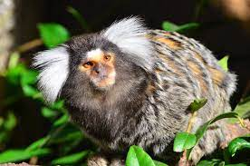

Saguis

-
Os saguis são pequenos primatas que, apesar de serem nativos do Brasil, no estado de Santa Catarina são considerados animais exóticos e invasores. A introdução desses animais pode causar um desequilíbrio ambiental, sobretudo em Florianópolis, onde os saguis possuem poucos predadores naturais.
O aumento da população de saguis se dá devido a preferência deles por áreas antropizadas, onde encontram poucos predadores naturais, abundância de alimentos e a facilidade de se acomodarem nos ambientes